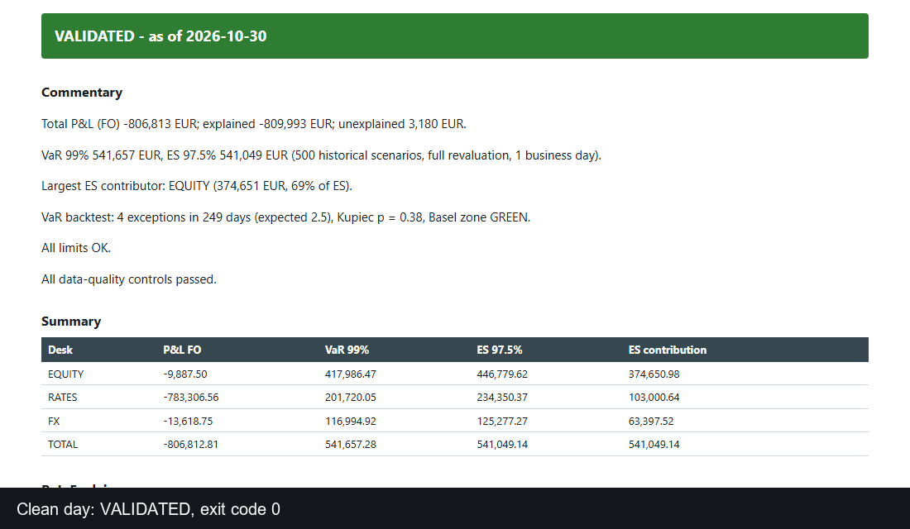

Market risk · daily reporting · Python
Can we trust today's numbers?
Every morning, before a risk team publishes its numbers, someone has to answer that question. This chain does it: it checks the day's data, computes P&L explain, VaR/ES and a VaR backtest, and writes an Excel report that carries a validation status.

14data controls, mapped to BCBS 239
400/400runs catch each of 7 injected defect types
2.5%false alarms on clean days (10 in 400)
1e-9replay tolerance on every archived run
Two days, same code
Both reports come from the same chain on synthetic data. Excel files are next to them.
VALIDATED
A clean day
All controls pass, status green, report ready to circulate. The VaR backtest is shown but never changes the status.
NOT_VALIDATED
A day with 3 injected defects
A duplicate, a stale price and a P&L gap. The workbook is still produced, with a red "do not circulate" banner.
What happens each morning
About 10 seconds on a laptop.
- Ingest 8 CSV extractions with strict schemas, for 3 desks and about 52 positions.
- Run controls C01–C11, then compute hypothetical P&L, explain by factor, VaR 99% / ES 97.5% (full revaluation) and limit usage.
- Backtest the VaR with Kupiec's test and the Basel traffic light.
- Write an 8-sheet workbook, then re-read it (C14) to check it matches the computed numbers.
- Archive inputs, outputs and a SHA-256 manifest;
rerunreplays any day and compares every number.
Read more
All data is synthetic. The chain checking itself is not an independent validation.